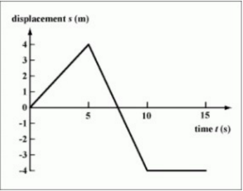
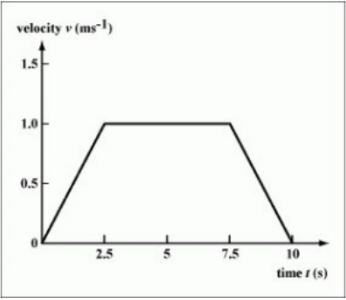
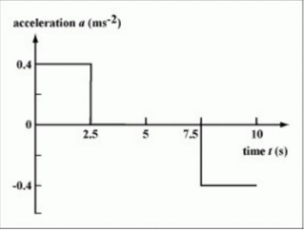

Mechanics Videos
Please watch the videos below to strengthen your understanding of the topics.
Mechanics
2.1 – Motion
Distance and displacement-
Distance- A scalar quantity which measures how far two locations are apart
from each other along a certain path.
Displacement- A vector quantity defined by the length and direction of the line
segment joining the initial and final positions of an object.
Speed and velocity
Speed- Rate of change of distance to time. Rate of change of displacement to time.Velocity- A measure dependent on the motion of the observer. The relative velocity of A to B is equal to the vector subtraction of the velocity of B from the velocity of A.
Acceleration
Rate of change of velocity, acceleration due to gravity of any free-falling object is given by g=9.81m/s^2. This value does not depend on the mass of the object. Take note that acceleration is a vector and thus has a direction. If we assume the upwards direction to be positive, the acceleration due to gravity would have a negative value of g=-9.81m/s^2.Graphs describing motion
Displacement-time graph

Velocity-time graph

Acceleration-time graph

Equations of motion for uniform acceleration
If acceleration is constant (uniform), the following equations can be used.
Projectile motion
An object is said to undergo projectile motion when it follows a curved path due to the influence of gravity.
If we assume air resistance to be negligible in a projectile motion-


The presence of air resistance changes the trajectory of the projectile by the following-
Fluid resistance and terminal speed
Air resistance limits the maximum velocity an object could attain from free-falling. For example:
2.2 – Forces
Objects as point particles
Forces change the velocity or shape of objects. The unit of force is newton (N). Objects are represented as a point mass to enable the representation for forces as arrows in free-body diagrams.Free-body diagrams
On a free body diagram, forces acting on an object are represented as arrows which stem from a point mass. The length and direction of the arrows corresponds to the magnitude and the direction of the forces acting on the body of interest.Determining the resultant force-
- Resolve all acting forces into horizontal and vertical components
- Add up the horizontal components
- Add up the vertical components
- Combine the sum of horizontal components and the sum of vertical components
Translational equilibrium
A body is said to be in translational equilibrium if it the net force acting on the body is zero. This means the body is either at rest or travels at constant velocity.Some real-life examples include:
Newton’s laws of motion
Newton’s First Law (Law of Inertia)
A body remains at rest or travels with constant speed along a straight line unless acted upon by an external force. (Net force = 0)Newton’s Second Law
Net force is directly proportional to acceleration and inversely proportional to mass. (F=ma)Newton’s Third Law
If a body A exerts a force on body B, then body B exerts a force of the same magnitude but in the opposite direction of body A. This pair of forces is called an action-reaction pair, which must act on two different bodies.Solid friction
Friction is a non conservative force which opposes motion. If there is no motion, then there will be no force caused by friction. For two soid surfaces moving over each other, the friction will be affected by the nature (roughness etc) of the two surfaces. However, the surface area and velocity of the object does not affect the friction.There are also two types of friction for solid surfaces: static friction and kinetic friction. Static friction is that which stops objects from beginning to move. Kinetic friction is that which slows objects down when they are moving. Static friction is always larger than kinetic friction.
These two types of friction are defined individually by their constants μs and μk respectively. The forces of friction are also dependent on the normal force the surface is applying, leading to
Friction force ≤ μs*Normal force for objects that are not moving
Friction force=μs*Normal force for objects that are moving.